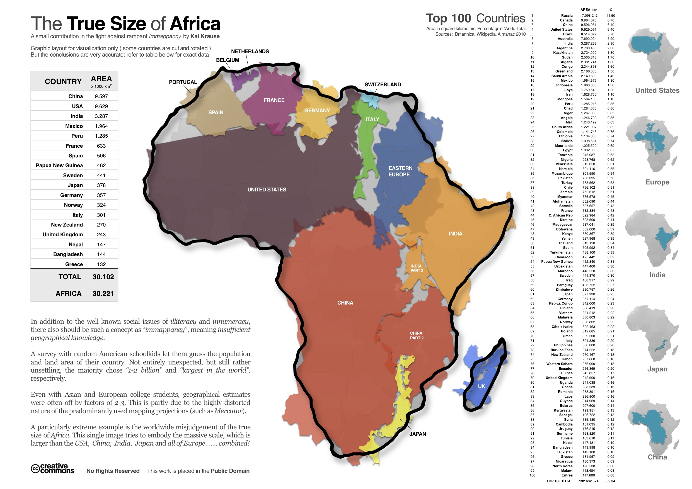
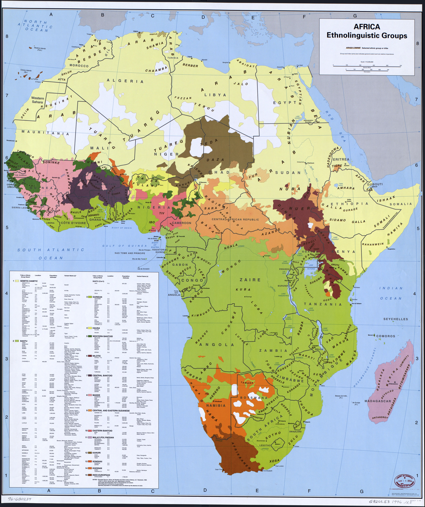
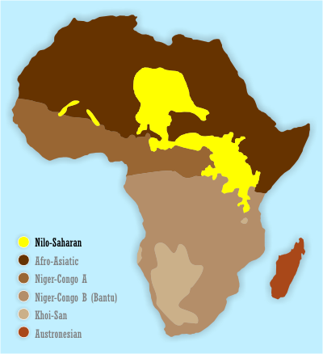
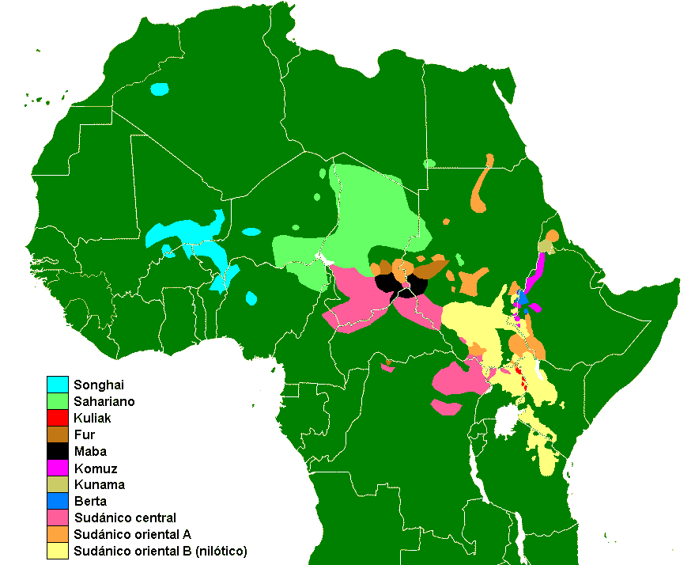
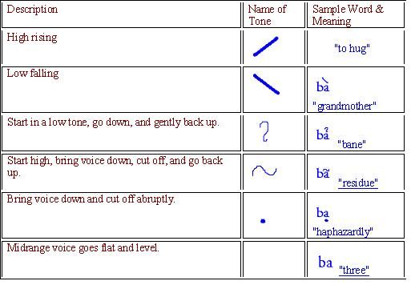
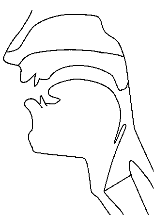
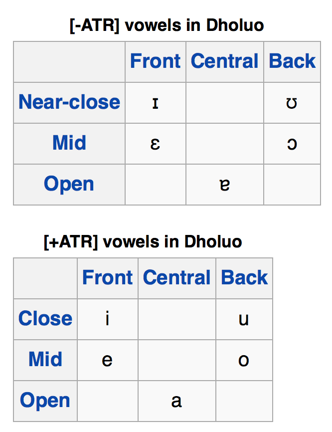

<lang>Zarma</lang><br><ldata>Nilo-Saharan:Songhay - Niger</ldata> <iframe data-autoplay width="840" height="690" src="http://www.youtube.com/embed/ChX-hk-ON0c"></iframe> --- # Nilo-Saharan Languages ### LING 1020 - Will Styler --- ### Administrative Note * For Monday, a new lecture topic: **"English is a linguistic trainwreck (like every other language!)"** --- ## Today's Agenda * Why typology is *really* hard in Africa * "Nilo-Saharan" * Two common features in African Languages * Songhay languages/Zarma * Luo * Kuliak --- Although I haven't said it explicitly, this course is all about **Typology** --- ### Language Typology The process of comparing languages and establishing relationships and universals among them --- ### Typology lets us make claims * Sometimes, these claims are regional * "Turkic languages are agglutinative" * "Semitic languages use template morphology" * Sometimes, they're universal * "Languages with SOV order are postpositional" * "If a language has the category of gender, it always has the category of number." * These are from [Greenberg's Universals](http://en.wikipedia.org/wiki/Greenberg's_linguistic_universals) --- Typological information is useful, but requires hard work! --- ### The Typology process * 1) Pick an area to study * 2) Get as much language data as you can from that area * 3) Start comparing and finding links and patterns * 4) Use those links and patterns to establish relationships --- ### Step 2 is a problem for African languages * "Get as much language data as you can from that area" --- ### Indo-European - "As much data as you can get" --- ### African Languages - "As much data as you can get" --- This is an even bigger problem for Africa because... --- ### Africa is big  --- ### There's lots of linguistic diversity <a href="lotwimg/africa_languages.jpg"></a> --- ### Linguistic diversity in Africa * 1.1 *billion* people live in Africa * 2000+ languages spoken in Africa (much higher, by some estimates) * Nigeria alone has 500+ languages * Entire *families* of languages are endangered --- ### Travel to Africa is complicated (in some places) * 20 out of 54 countries currently have US State Department Travel Warnings * Corruption is often a problem * Getting to your language's speakers from a transit hub is non-trivial --- ### Language documentation is hard once you get there * Sam Beer is going to talk all about that. --- ### So, we know a lot less about African languages than we'd like to. * There's less data to compare, less research being done, and less funding to pay for it. * This means that our language groupings are a bit looser in Africa than elsewhere. --- ... but we still do our best! --- ### Africa has four main language families * Afroasiatic * Nilo-Saharan * Niger-Congo * Khoisan * These were first laid out in Greenberg's 1963 "The Languages of Africa" ---  --- ### ... but we're not quite sure about two of them * Afroasiatic and Niger-Congo are pretty well accepted * Khoisan has all the vaguely isolating, clicky languages Greenberg couldn't place elsewhere * Nilo-Saharan has been called "Greenberg's Trashcan", as it has the rest --- ## ... but these classifications are the best we've got! * So, we'll run with them. --- Today, we're working with... --- # Nilo-Saharan Languages! --- ### Nilo-Saharan * Spoken by ~39 million (or more!) speakers * Loosely grouped, typologically speaking * The evidence for Nilo-Saharan relies more on cognates than shared features * Very diverse (almost as much so as IE) * Contains some important (and cool!) languages and families --- ### Nilo-Saharan Languages * Luo (~6 million speakers) * Kanuri (4 million speakers) * Songhay (3.2 million speakers) * Maasai (1 million speakers) * Kuliak subgroup (~15,000 speakers) * 10,000 speakers of Ik, 5,000 of Soo * ... and many, many more that we don't have time to even mention. ---  --- ### Features of Nilo-Saharan Languages * Singulative/Collective Number System * ... --- ### Features of Nilo-Saharan Languages Singulative/Collective Number System ... <audio data-autoplay src="humorimg/cricket.mp3"></audio> --- ### Singulative/Collective Number System --- ### English is a "Singular/Plural" system --- "Bad movie" --- "Bad movie***s***" * This is called a **plural** form --- (Armageddon was OK, I guess) --- The default for a word in Singular/Plural systems is singular. * If you want plural, **you have to add a morpheme** --- In a Singulative-Collective System, **the default is plural** * If you want singular, **you have to add a morpheme** --- ŋɛɛti 'lice' <center> <table> <tr> <th></th> <th></th> <th></th> <th></th> </tr> </table> </center> --- ŋɛɛti-n 'louse'. <center> <table> <tr> <th></th> </tr> </table> </center> * This is called a **singulative form** --- So, in Nilo-Saharan Languages, plural is usually the default, and singular needs to be marked. * (but even this isn't always the case) --- Beyond that, there aren't really specific features *across* Nilo-Saharan. * **... but there are some features present in *many* Nilo-Saharan languages** * (and lots of other African languages) --- ### Two Common Features of African Languages * Level-based tone systems * ATR Vowel Systems and Harmony --- ## Level Tone --- ## Tone Changes in pitch during the word change the meaning of the word --- ### There are two types of Tone Language * Level (or "register") tone - Tone is categorized by pitch "levels" * "High", "Low", "Mid", "Rise", "Fall" * Contour Tone - Tone is categorized by shape and *pattern* of pitch --- ### Vietnamese Tone Contours  --- ### Level Tone * Very common in African languages * Usually "High" and "Low" * Sometimes "Mid", or "Rising", or "Falling" --- <section data-background="img/clickerbkgrnd.png"></section> <lang>Zarma (Djerma)</lang><br><ldata>Nilo-Saharan:Songhay - Niger</ldata> Yesterday - "bi" Wound - "bi" <audio data-autoplay src="phonmedia/zarma_tonecontrast.wav"></audio> --- (Zarma also has rise and fall, but I couldn't find recordings of it) --- ### Tone is not intonation! * Tone is a property of the word * In Zarma, "bí" for "Yesterday" *must* have a higher pitch. * Intonation does not change the meaning of a morpheme * It can change the meaning in a sentence, though! * English has intonation, but not tone! --- Now, our other feature... --- ## ATR-based Vowel Systems --- ### ATR ("Advanced Tongue Root")  --- ### ATR * Vowels with Advanced Tongue Root are "+ATR" * Vowels without ATR are "-ATR" * Similar to the difference between the English /i ɪ/ ("beet" vs. "bit"), /u ʊ/ ("boot" vs. "book") * This is called "Tense vs. Lax" in English * In ATR languages, it's *really* important --- <lang>Dholuo</lang><br><ldata>Nilo-Saharan - Kenya/Tanzania</ldata>  --- ### ATR Harmony When all vowels in the word *must* be either +ATR or -ATR --- <lang>Karamojong</lang><br><ldata>Nilo-Saharan - Uganda</ldata> ɑkɪdɔŋ - "to castrate" * ɑkidoŋ-okin - "for castration" --- **ATR Harmony is common throughout Africa** --- ### Features of Nilo-Saharan Languages * Singulative-Collective Number Systems * ... * ### Common features of African languages * ATR in vowel systems * Level tones! --- *"Uh, OK... but why did you use "to castrate" as an example there?"* **Because it's the best example I found** --- ## This represents a truth of field linguistics * "The sentence you need when doing Linguistic fieldwork will often end up being awkward, embarassing, or absurd." --- **Actual Sentences Elicited during 'Field Methods' in the CU Linguistics Department, Spring 2007** --- <lang>Zarma</lang><br><ldata>Nilo-Saharan:Songhay - Niger</ldata> *ai feidzi woy de no yon go* 'This is indeed my female sheep there' --- <lang>Zarma</lang><br><ldata>Nilo-Saharan:Songhay - Niger</ldata> *a goga dei feidzi za susube za kalichini* 'He was sheep-buying from morning to night' --- <lang>Zarma</lang><br><ldata>Nilo-Saharan:Songhay - Niger</ldata> *ai do: na ginə kar* 'I used to be hitting you (regularly)' --- <lang>Zarma</lang><br><ldata>Nilo-Saharan:Songhay - Niger</ldata> *ai ginə kar chei bo:bo:* 'I will be hitting you regularly in the future' --- <lang>Zarma</lang><br><ldata>Nilo-Saharan:Songhay - Niger</ldata> *fawoka na feidziyama bío: kar* 'The butcher hit the bad black sheep' --- <lang>Zarma</lang><br><ldata>Nilo-Saharan:Songhay - Niger</ldata> *ai go fu:* 'I am at home' --- <lang>Zarma</lang><br><ldata>Nilo-Saharan:Songhay - Niger</ldata> *ai ga fu:* 'I am going to fart' --- (OK, let's learn something not obscene in Zarma!) --- ### Zarma ("Djerma") * Nilo-Saharan, spoken in Niger * Around 2 million speakers! * The most widely spoken Songhay language * SOV order * Vowel length --- ### Cool Noun Form System! <center> <style type="text/css"> .tg {border-collapse:collapse;border-spacing:0;} .tg td{font-family:Arial, sans-serif;font-size:14px;padding:10px 5px;border-style:solid;border-width:1px;overflow:hidden;word-break:normal;} .tg th{font-family:Arial, sans-serif;font-size:14px;font-weight:normal;padding:10px 5px;border-style:solid;border-width:1px;overflow:hidden;word-break:normal;} .tg .tg-lt3p{font-size:22px} .tg .tg-2662{font-weight:bold;font-size:22px} </style> <table class="tg"> <tr> <th class="tg-lt3p"></th> <th class="tg-2662">Indefinite</th> <th class="tg-2662">Definite</th> <th class="tg-2662">Demonstrative</th> </tr> <tr> <td class="tg-2662">Singular</td> <td class="tg-lt3p">-∅</td> <td class="tg-lt3p">-ǒ or -ǎ</td> <td class="tg-lt3p">-ô</td> </tr> <tr> <td class="tg-2662">Plural</td> <td class="tg-lt3p">-yáŋ</td> <td class="tg-lt3p">-ěy</td> <td class="tg-lt3p">-êy</td> </tr> </table> </center> * There is no gender, even in pronouns! --- <lang>Zarma</lang><br><ldata>Nilo-Saharan:Songhay - Niger</ldata> <audio data-autoplay src="lotwimg/Zarma_Narrative.mp3"></audio> --- <lang>Dholuo</lang><br><ldata>Nilo-Saharan - Kenya</ldata> <iframe data-autoplay width="840" height="690" src="http://www.youtube.com/embed/0KRUq1Lb9UI"></iframe> --- ### Dholuo ("Luo") * Spoken by around 3.5 million people in Kenya and Tanzania * ATR Harmony * Level Tone * Differentiates "Alienable" and "Inalienable" possession * You use a different word for "My arm" and "My laptop" --- ### Dholuo *cho-go guok* bone-POSS.ALI dog 'the dog's bone' (which it is eating) *cho-k dhiang* bone-POSS.INALI cow 'a cow bone' --- ### The Kuliak Languages * A sub-family of Nilo-Saharan, three languages * Ik - 10,000 speakers * Soo - 500 speakers and falling * N'yangi - ~1 speaker * Sam Beer will be talking about his (mis)adventures in Kuliak next Wednesday * Sam is awesome. --- ### Wrapping Up! * Typology is tough * ... especially when you don't know about many of the languages * Africa's got four main language families (we think) * Nilo-Saharan is big, and diverse * ATR and Tone are common in African language * Zarma is awesome * .. and "I'm at home" is *ai **go** fu:* --- ## Next time: Niger-Congo Languages, and Khoisan! <correct>Pereltsvaig Ch. 6.2 and 6.3</correct> <danger>This has changed on the schedule!</danger> --- <huge>Thank you!</huge>